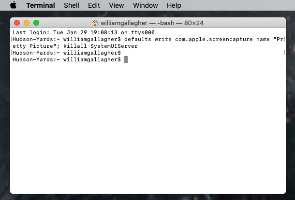

Git & Terminal basics
You can photograph the entire screen, a window, or just part of the screen.
Take screenshots on Mac
To take a screenshot, press and hold these three keys at the same time: Shift,
Command key and 3.
If you see a thumbnail in the corner of the screen, click on it to take the screenshot
to edit. You can also wait for the screenshot to be saved on the desktop.
Using Windows terminal (popularly known as Command Prompt) and Linux is a common task for
users of these systems, because the available commands are very useful in many occasions.
The Mac and Macbook also have a command terminal,
but most users of Apple computers are wary and tend to be afraid of doing
something wrong with the software.
It turns out that the Mac Terminal is there to make the device easier to use
and can be used to your advantage in any situation.
